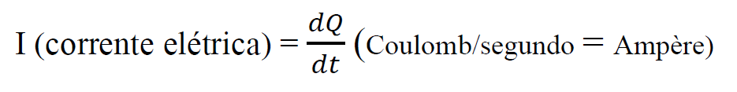
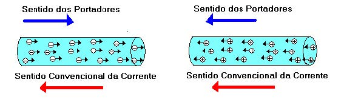
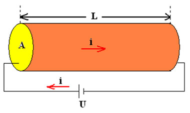
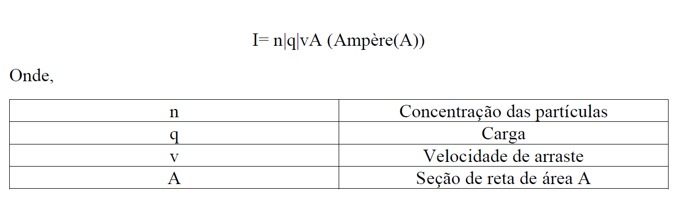
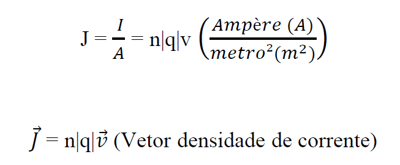
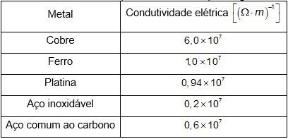
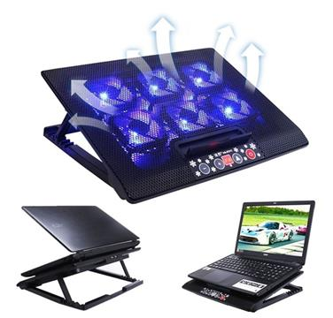
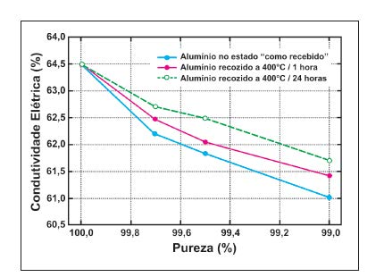

Após a descoberta do elétron, pelo físico Joseph John Thomson, em 1897, utilizando os raios catódicos, a comunidade científica, alguns anos à frente, se deparou com o início do desenvolvimento da teoria quântica. Assim, os físicos estavam buscando estudar o estado sólido da matéria, explicando os fenômenos ocorridos nos materiais.
Durante esses estudos, o físico alemão Paul Drude (1863- 1906), propôs um modelo que explica a condução elétrica dos metais.
Para a formulação do modelo, Drude considerou 4 hipóteses, sendo elas:
1- Não existe interação elétron – elétron;
2- As colisões ocorrem de forma inesperada, de forma que não exista movimento dos íons;
3- Existe um tempo médio entre as colisões;
4- O elétron perde a memória sobre a trajetória e velocidade, após cada colisão.
Agora considerando um condutor, em equilíbrio eletrostático, temos algumas observações:
1- O campo elétrico é nulo em seu interior, logo não existe corrente elétrica;
2- Mesmo não existindo corrente elétrica, existe um movimento de elétrons no interior do condutor; Esse movimento se equipara ao movimento das moléculas de um gás ideal. O movimento ocorre de forma aleatória com uma velocidade muita alta, da faixa de 106m/s;
3- Os elétrons são atraídos pelos íons, assim não escapam do material;
4- O movimento é caótico, logo não existe um fluxo efetivo em nenhuma direção, não existindo corrente elétrica.
Considerando que existe um campo elétrico, existe um movimento de arraste, provocado pelo campo elétrico. Esse movimento é na direção da força elétrica 𝐹⃗ e tem uma ordem de grandeza de aproximadamente 10^(−4)m/s. Como existe um movimento de arraste, há também uma velocidade de arraste 𝑣⃗, a qual provoca um arraste ordenado das cargas, em um sentido determinado, no condutor. Essa movimentação de cargas é denominada Corrente elétrica
Assim, a corrente elétrica é definida como o fluxo total das cargas por unidade de tempo. Deste modo, quando uma carga dQ flui em uma área em um intervalo de tempo dt, temos:

Com a movimentação de cargas em uma determinada direção, é esperado que exista um sentido para a corrente Elétrica.
Mas como determinar o sentido dessa grandeza a partir da sua carga?
Se o movimento for de prótons, como no acelerador de partículas, por exemplo, haverá a movimentação de cargas positivas. Já no caso da corrente elétrica gerada nos condutores usuais, o que ocorre é o arraste de elétrons. Desse modo, o Sentido convencional adotado é dado ao observar o movimento dos portadores de carga, atribuindo-o conforme o sentido teórico ou real de cargas positivas.
Nesse sentido, se a corrente elétrica for gerada por prótons, é adotado o sentido real dessa movimentação. Todavia, se a corrente é produzida por elétrons, o sentido covencional é adotado pelo movimento teórico de cargas positivas. Veja a imagem abaixo:

Outra maneira de definir a corrente elétrica é relacionando com uma seção reta de área A, assim:


Com isso, podemos definir densidade de corrente (J) como a corrente que flui por unidade de área da seção reta:

Observe que é considerado que o valor da carga q é dado em valor absoluto pois estamos olhando conforme o sentido covencional, que é sempre positivo.
A condutividade elétrica de um material representa a capacidade que ele tem de transportar cargas elétricas, quando submetido a uma diferença de potencial. Um material de condutividade alta tem uma facilidade de transportar cargas elétricas e, de maneira oposta, um material com condutividade elétrica baixa apresenta uma resistência maior ao transporte de cargas elétricas.
A condutividade (σ) é dada pela razão entre a densidade de corrente e o campo elétrico:
Condutividade de alguns materias

A condutividade por ser uma propriedade que diz sobre a capacidade dos materiais de conduzir eletricidade, ela acaba sendo um importante fator na hora de selecionar um material. Com isso, de forma geral, todos os materiais físicos possuem a habilidade de conduzir eletricidade, apesar de alguns serem mais hábeis que outros (ou seja, tem maior condutividade). Nesse sentido, os materiais são subdivididos nas seguintes categorias:
Condutores elétricos
São aqueles materiais que possuem alta condutividade. A maior parte dos condutores são metais, por causa da organização eletronica desses materiais. Apesar disso, também existim condutores não-metálicos e iônicos. Um bom condutor é aquele que apresenta a condutividade maior de 10^4 /Ωm.
Isolantes
São aqueles que possuem uma quantidade muito pequena de elétrons livres, o que acarreta em uma aplicação de diferença de potencial muito elevada para que a corrente elétrica o percorra. Um bom isolante apresenta uma condutividade de cerca de 10^(-10)/Ωm.
Semicondutores
São aqueles que possuem propriedades intermediárias ao comparados com materiais condutores e materias isolantes. Normalmente são utilizados na indústria eletrônica. Os mais comumente empregados são o Silício, o Germânio e o comporto Arseneto de Gálio. Um semicondutor típico apresenta condutividade entre 10^(-10)/Ωm e 10^4/Ωm, dependendo da temperatura.
A condutividade não é uma propriedade constante na natureza, ela varia entre um condutor e outro, além de que pode ser alterada ou influenciada por alguns aspectos, tais como:
Temperatura
Ao aumentar a temperatura de um condutor, pode-se alterar sua condutividade, tendo em vista que essa variação ocorre em virtude da excitação térmica dos átomos dos materiais.
Não é atoa que alguns aparelhos eletrônicos sensíveis costumam ser acompanhados de mecanismos de resfriamento para manter a temperatura do condutor constante. Por exemplo, o cooler em um notebook, que tem o papel de reduzir o calor gerado pelos componentes da máquina.

Impurezas
Ao se ter impurezas, ou seja, partículas de isolamento de elementos não condutores nos condutores elétricos, pode haver impedimento do fluxo de corrente nos condutores, levando a uma diminuição nos níveis de condutividade do material (essas partículas podem ser de origem natural ou por falhas de fabricação).
Por exemplo, o nível de impureza em materiais semicondutores afeta a condutividade mais do que nos materiais condutores, em alguns casos melhorando-a e em outros casos reduzindo a condutividade. O seguinte gráfico mostra a relação da condutividade do alumínio e a quantidade de impurezas:

Campos eletromagnéticos
Ao constatar a presença de campos eletromagnéticos ao redor do condutor elétrico, sua condutividade pode ser alterada. Embora os condutores criem campos magnéticos quando conduzem corrente elétrica, esses campos se encontram de forma perpendicular uns aos outros, o que não causa problema no fluxo de corrente. Porém, quando se trata de campos externos, essa organização é independente, o que pode atrapalhar o fluxo de corrente ou até interrompê-lo, dependendo de sua intensidade.
Frequência
Ao trabalhar com corrente alternada, ou seja, que oscila quando flui, pode haver interferência da frequência da corrente elétrica, uma vez que quando muito aumentada, acima de um certo limite, ocasiona em um fluxo de corrente no redor de um condutor e não através dele. Essa situação é também conhecida como efeito pelicular, que ocorre normalmente quando a frequência aumenta acima de 3GHz – Hertz – (ou 3.000.000.000 ciclos oscilatórios de corrente por segundo).
1. As seguintes afirmações são verdadeiras ou falsas?
2. "A condutividade elétrica é uma propriedade sempre constante, sendo afetada apenas por condições ambientais e externas ao material”. Essa frase é:
3.Correlacione o valor de condutividade com a categoria do material.
i. Isolante |
I. De 10^(-10)/ Ωm a 10^4/ Ωm |
| ii. Semicondutor |
II. Maior que 10^4/Ωm |
iii. Condutor |
III. Menor que 10^(-10)/ Ωm |
A – Verdadeiro. Em condutores que não existe campo elétrico em seu interior, não existe corrente elétrica.
B – Falso. A velocidade de arraste, mesmo sendo muito pequena, provoca uma corrente elétrica no interior do condutor.
C – Verdadeiro. O sentido convencional da corrente elétrica se mantem o mesmo, independente do sinal da carga que esteja em movimento.
D – Falso. Quanto menor for a condutividade elétrica de um material, mais dificuldade ele terá para transportar cargas elétricas.
E – Verdadeiro. I = 𝑑𝑄/𝑑𝑡
F – Falso. A densidade de corrente descreve como as cargas fluem em determinado ponto. Por outro lado, a corrente elétrica descreve como as cargas fluem através de um objeto estendido, como um fio.
Letra b. A frase em questão é falsa, já que a condutividade também é afetada por questões internas ao material, tais como a presença de impurezas na estrutura microscópica.
Letra b.
4 fatores que afetam a condutividade elétrica. Foxlux. 2015. Disponível em: https://www.foxlux.com.br/blog/dicas/4-fatores-que-afetam-a-condutividade-eletrica. Acesso em: 23 de setembro de 2020.
AMORIM, Bernardo Corrêa. O Modelo de Drude para Interação com Metais. Instituto de Física de São Carlos – USP, São Paulo, 06 jun. 2018. Disponível em: http://www.ifsc.usp.br/~strontium/Teaching/Material2018-1%20SFI5708%20Eletromagnetismo/Monografia%20-%20Bernardo%20-%20Modelo%20Drude.pdf Acesso em: 23 de Set. 2020.
Cooler de alumínio. Americanas. Disponível em: https://www.americanas.com.br/produto/1218170096/silencioso-cooler-de-aluminio-notebook-cooling-pad-base-de-5v-led-6-fas-notebook-laptop-cooler-porta-usb-suporte-para-hp-15-17-15-6#info-section. Acesso em: 23 de setembro de 2020.
KÍTOR, G. L.. Condutividade Elétrica. InfoEscola. [202-]. Disponível em: https://www.infoescola.com/fisica/condutividade-eletrica. Acesso em: 23 de setembro de 2020.
OLIVEIRA, J. C. P. T.; PADILHA, A. F.. Caracterização microestrutural dos alumínios comerciais AA1100, AA1050 e AA1017 e do alumínio superpuro AA1199. Scielo. 2009. Disponível em: https://www.scielo.br/scielo.php?script=sci_arttext&pid=S0370-44672009000300017. Acesso em: 23 de setembro de 2020.
REIS, Fábio. Curso de Eletrônica - Condutores, semicondutores e isolantes. Bóson Treinamentos em ciência e tecnologia. 2016. Disponível em: http://www.bosontreinamentos.com.br/eletronica/curso-de-eletronica/curso-de-eletronica-condutores-semicondutores-e-isolantes. Acesso em: 23 de setembro de 2020.
SEARS, F. W. ; ZEMANSKY, M. Física III - Eletromagnetismo Young & Freedman: 12 e.d. São Paulo: Editora Addison Wesley. p. 135-140